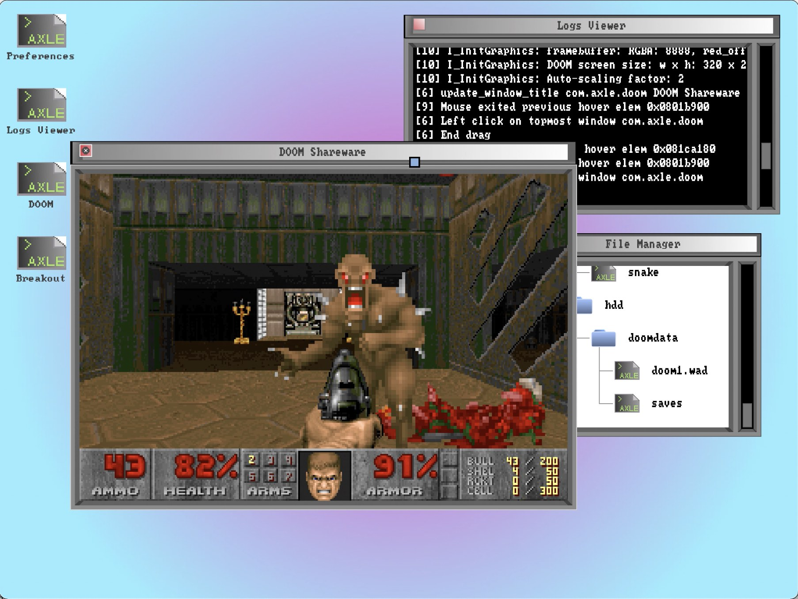
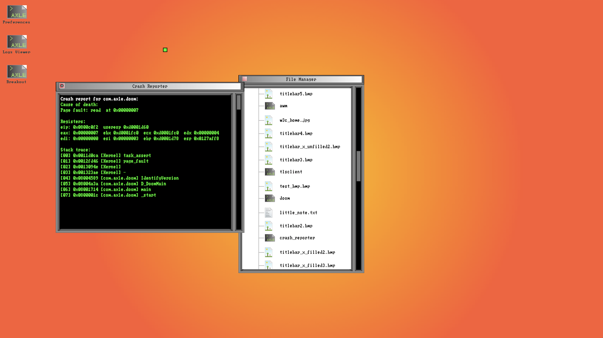

axle desktop environment
awm (2021)




one wheel at a time.
axle OS is a hobby UNIX-like OS. I started the project in early 2016, and have had stints of working on it heavily since then.
axle OS's first incarnation was a multitasking monolithic kernel, with little support for IPC, user-mode or process loading.
The current incarnation is a microkernel built around variable-length IPC messaging. It supports a userspace, efficient compositing window manager,
a C stdlib, etc. All applications, including the desktop environment and device drivers, are ELF executables running in userspace.
There's a kernel driver interface that's used for userspace RTL8139 (NIC), PS/2 mouse, and PS/2 keyboard drivers.
There's also a GUI toolkit apps can use to implement interfaces and have their event loop managed.
In September 2021, I ported DOOM.
axle's features (2021) also include:
Most times, you will be running axle in an emulator such as QEMU (the recommended emulator). While axle, like any OS, can be installed on real hardware, it is much less cumbersome and easier to use an emulator.
To run a pre-built image of axle OS, check the releases page and download an ISO. To execute the axle ISO with qemu, execute the following command:
qemu-system-i386 -net nic,model=ne2k_pci -d cpu_reset -D qemu.log -serial file:syslog.log -vga std -cdrom axle.iso
axle will log kernel debug info to a file called syslog.log which will be created in the directory you run axle in. If you use one of axle's debug keystrokes (such as ctrl+m or ctrl+p), the info will be logged to this file. Additionally, anything logged through printk() will be outputted to this file.
axle is a fully free and open source project, using the MIT license. If you would like to learn more or contribute to axle, don't hesitate to get in touch! The repo is hosted on github, and there's a slack for active contributors/discussion about axle. Feel free to submit a pull request/file an issue/ask to join the slack!